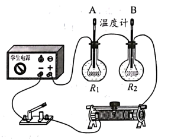

2023年北京中考物理 第23题 解析
23. 小京用如图所示的电路探究电流通过导体产生的热量与导体的电阻是否有关，其中两个烧瓶完全相同，瓶内装有质量和初温相同的煤油、相同的温度计A和B、阻值不等的电阻丝R1和R2。

（1）该实验采用串联电路可以控制________相同和________相同；
（2）闭合开关一段时间，两支温度计示数的变化量不相等，实验结论是：________。
【答案】 ①. 电流 ②. 通电时间 ③. 电流通过导体产生的热量与导体的电阻有关
【解析】
【详解】（1）[1][2]该实验采用串联电路，两电阻丝 电流与通电时间相同。
电流与通电时间相同。
（2）[3]闭合开关一段时间，两支温度计示数的变化量不相等，说明当电流与通电时间相同时，不同电阻的电阻丝产生的热量不同，可得电流通过导体产生的热量与导体的电阻有关。